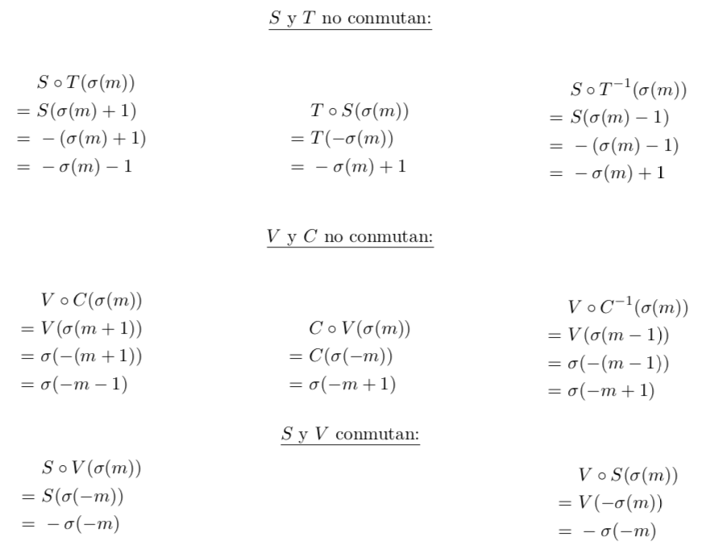

Este artículo es el segundo de la colección Serialismo y matemáticas. Las músicas serialistas son aquellas que permiten construir castillos con un solo grano de arena: una serie particular, una permutación de notas, dinámicas o timbres. La serie se coloca en la obra secuencialmente, siempre igual o con alguna modificación que la adorne. Y es que para esta música, la serie es el ladrillo y las matemáticas son la pintura con la que decorarlos, ya que las transformaciones que se le puede aplicar a una serie forman preciosas estructuras matemáticas enmarcadas en la Teoría de Grupos.
En el primer artículo [7] nos centramos en el dodecafonismo, en sus orígenes y en comentar una de sus obras. En este segundo artículo, ampliaremos las definiciones dodecafónicas para descubrir bajo ellas, con ayuda de diagramas, el grupo diédrico (sección 2); y contaremos quiénes fueron los discípulos y sucesores de Schoenberg y cómo provocaron la creación del serialismo integral (sección 3). Más adelante proporcionaremos las herramientas matemáticas para después contar el número de espectros seriales que un compositor puede utilizar. En definitiva, haremos un recorrido a fondo por el serialismo y exploraremos sus posibilidades musicales y matemáticas.
Como vimos en el anterior artículo [7], las fórmulas de las transformaciones dodecafónicas habituales son:
I(σ(m)) = -σ(m) + 2σ(0)
Tk(σ(m)) = σ(m) + k
R(σ(m)) = σ(-1 - m)
Sin embargo, la importancia de estas definiciones radica en qué espectro serial forman, y no en cómo se nombra cada serie específica. No es distinguible a un nivel musical y, de hecho, hay más de un convenio para ello.[xxxExplica esto un poco mejor; creo que para el lector no se entiende bien el problema que hay con los nombres. Dale más claridad a esto :-)]
Han surgido a lo largo de la historia al menos dos métodos para nombrar las series. El primero, el método tradicional, se ha usado desde al menos 1945. El segundo, el método de tonos absolutos, fue concebido por George Perle [6] en su libro Twelve-Tone Tonality en 1977.
En el método tradicional, T0 se usa para la primera serie que se encuentra en la composición; es decir, la serie original. En cambio, el método de tonos absolutos nombra las series T basándose solamente en la nota en la que comienzan: T0 se usa para la serie que comienza por un do, T1 para el re, y así sucesivamente. En ambas, las series transpuestas se nombran como Ψk.[xxxAquí debería ser T0, ¿no?] Estas nomenclaturas no caracterizan adecuadamente el objeto matemático que deben representar, es decir, funciones aplicadas a las series. Son nombres arbitrarios que además producen ambigüedad al añadir otras funciones —por ejemplo, si no conmutan— o al intentar describirlo matemáticamente.
En todo caso, cualquier convenio de notación tendrá fórmulas matemáticas distintas al resto, pero todas preservan el material compositivo de la obra. Eso quiere decir que se pueden redefinir algunas de las transformaciones siempre que preserven el sentido musical. Por ejemplo, la inversión puede prescindir de ser transportada para que la primera nota coincida con la original. Para distinguirla de la primera definición, ésta se llamará S de simetría: S(σ(m)) = -σ(m). E igual que la inversión es el cambio de signo por fuera, la retrogradación puede convertirse simplemente en el cambio de signo por dentro. Ésta se llamará V de volteo: V (σ(m)) = σ(-m).
Así quedan dos transformaciones que se asemejan a reflexiones: una por dentro y otra por fuera; y una adición por fuera. Aquí dentro significa antes de aplicar σ y fuera significa después de aplicar σ, ya que no se debe olvidar que σ, la permutación, es una función en sí misma. Y ahora surge una cuestión natural: ¿cuál sería entonces el resultado de sumar dentro, es decir, antes?
Esta nueva transformación, cuya aparición resulta natural tras las otras tres, se llama desplazamiento cíclico. Inventada y usada por Alban Berg [2], y en algunas de las primeras obras de Schoenberg, Ck desplaza el comienzo de la serie k posiciones más allá:
La serie 4-cíclica sobre la permutación P de la Suite Op. 25 es la siguiente serie C4:
Si no se añade la transformación C, entonces V no conserva el espectro serial de {I, T, R}; pero si se añade sí se conserva ya que V es composición de C y R.
En resumen, se puede trabajar con un nuevo sistema de definiciones que mantienen el significado musical del serialismo, pero varían la notación con la que se trabaja. Estas son las nuevas fórmulas de las transformaciones:
| S(σ(m)) | = -σ(m) | ||
| Tk(σ(m)) | = σ(m) + k |
| V (σ(m)) | = σ(-m) | ||
| Ck(σ(m)) | = σ(m + k) |
Para visualizar mejor cómo actúan las distintas transformaciones, las series se pueden representar mediante diagramas de reloj [3]: una sucesión de aristas con una orientación establecida que conecta los vértices de un dodecágono en el orden de la serie. Ya que el desplazamiento cíclico actúa como si la serie fuese circular, hay una arista extra que une la última nota a la primera. El comienzo de la serie y su orientación se marcan con una flecha.
Arriba se incluye el diagrama de la serie original σ de la Suite Op. 25. Se pueden distinguir las características de la serie, como las tres diagonales, que son los tres intervalos de tritono. A continuación se incluyen los diagramas de las transformaciones dodecafónicas originales: la transposición, la inversión y la retrogradación; así como el nuevo desplazamiento cíclico.
La transposición es una rotación en el sentido en el que apunta la flecha; la inversión es una reflexión con el eje de simetría en la diagonal que pasa por la flecha; la retrogradación es un cambio de orientación de la flecha; y el desplazamiento cíclico es el avance interno de la flecha por el recorrido de la serie.
La diferencia entre las inversiones I y S es precisamente la transposición de 2σ(0) = 8 semitonos en este ejemplo. Comparando S con T0 se puede además observar que S es una reflexión con el eje de simetría en 0, en vez de que el eje dependa de la propia permutación.
Por otro lado, la comparación entre las retrogradaciones R y V muestra que, aunque en principio más arbitraria, V es una transformación más natural, ya que deja fija la flecha. La diferencia entre ellas es en realidad un desplazamiento cíclico de -1.
He creado una página interactiva que genera diagramas de reloj de cualquier serie para cualquier longitud serial, además de generar series aleatorias. También se pueden aplicar las transformaciones a la serie, tanto las originales como las del nuevo sistema, para ver cómo se comporta el diagrama. Está escrita en Elm y el código puede encontrarse en https://gitlab.com/dodecafonismo/diagramas.
En el enlace https://diagramas.netlify.com se accede a la aplicación web. Sus instrucciones de uso se encuentran al final de la página. Además, he creado un comando en LATEX que dibuja estos diagramas dada su serie, y opcionalmente su nombre y el número que está arriba:
y en este caso up=4 no es necesario, ya que por defecto se coloca arriba la primera nota de la serie. El comando se encuentra en el paquete de LATEX ddphonism, disponible en el enlace https://www.ctan.org/pkg/ddphonism.
El conjunto de transformaciones {S, T, V, C} está compuesto por dos parejas con semejanzas entre sí. S es una reflexión y T una rotación de orden 12 —es decir, que al aplicarla 12 veces se vuelve a la identidad— y ambas se aplican a la figura entera; es como mover el diagrama por el papel. En cambio, V es una reflexión de la flecha en sí, y C una rotación —también de orden 12— de la flecha sobre la línea; ambas aplicadas al interior de la figura.
Cada pareja genera un grupo muy conocido: el grupo diédrico o diedral. Se denota por D12 y representa el grupo de simetrías de un polígono regular; en este caso, un dodecágono. En otros ámbitos, Dn también se denota por D2n, ya que 2 * n es el número de elementos que tiene el grupo. Por ejemplo, aquí se muestran todas las simetrías de un octógono, que son los 16 elementos de D8, aplicados a una señal de STOP.
De igual manera, el conjunto de series de un espectro serial se consigue aplicando a la serie las distintas funciones transformativas; se obtiene entonces un grupo diédrico para ambas parejas de funciones.
Al haber dos parejas distintas que actúan por separado dentro y fuera de la figura, el grupo completo que forman las cuatro transformaciones es el producto directo de dos copias del diédrico: D12 × D12.
Podemos observarlo claramente si representamos la serie de una segunda forma: como la correspondencia entre vértices de dos dodecágonos. La serie original, que es en realidad una permutación de 12 elementos, se representa como una función: los vértices del dodecágono interno se envían biyectivamente a los vértices externos. Así, mσ(m). Este diagrama es similar al matricial pero enroscado en sí mismo, de tal forma que se aprecia la permutación escogida mediante las flechas, que son fijas, y facilita un significado del antes y el después de aplicarla.
Las dos primeras figuras describen esto mismo: la representación de la serie original y la representación de la permutación mediante las flechas, que se mantendrán constantes en el resto de figuras.
Las cuatro siguientes figuras representan las cuatro funciones transformativas, que son en realidad la reflexión y la rotación del grupo diédrico de cada dodecágono. Aplicarlo al de dentro es aplicarlo antes de las flechas; antes de la permutación. Aplicarlo fuera es transformar después de las flechas; después de la permutación.
He creado un comando en LATEX que dibuja estos diagramas diédricos dada su serie original y las funciones aplicadas a ella: t, s, c y v. Se aplican en ese mismo orden, y por defecto están a 0. \ddihedral[c=2,t=3,s=1]{4,5,7,1,6,3,8,2,11,0,9,10}. El comando se encuentra en el paquete de LATEX ddphonism, disponible en el enlace https://www.ctan.org/pkg/ddphonism.
La rotación, r, y la reflexión, s, de un grupo diédrico no conmutan, sino que cumplen la relación r ⋅ s = s ⋅ r-1. Por otro lado, en los productos directos los elementos de un lado conmutan con los del otro. Así, {S, T} y {V, C} no conmutan, pero el resto de parejas sí. La verificación de estas afirmaciones, que confirman que el grupo generado es D12 × D12, se encuentran a continuación:

Volviendo a las definiciones originales {I, T, R, C}, su estructura interna es bien distinta. El problema de I es que depende de la permutación escogida, por lo que a veces tiene unas propiedades y a veces otras. En cambio, la definición de V con respecto a R es meramente estética: ya que no depende de la permutación, su conmutatividad se mantiene invariante.
Viendo cómo conmutan los elementos de este sistema se aprecia la dificultad de I. Curiosamente, la conmutatividad de {I, R} e {I, C} se pierde, pero se gana la de {I, T}. Así, T conmuta con todo en el sistema. Esto muestra una ventaja de la definición de I.
Los únicos casos en los que podrían conmutar ocurrirían cuando
Es decir, cuando la primera y la última nota de la serie original se distancian en 6 semitonos, como es el caso de la permutación en la Suite Op. 25:

Los únicos casos en los que podrían conmutar son cuando
Es decir, cuando la primera y la segunda nota de la serie original se distancian en 6 semitonos.
Si se echan las cuentas con Ck en vez de con C1, pueden conmutar si σ(k) -σ(0) = 6. Como σ es una
permutación, devuelve todos los valores de 0 a 11 y solamente una vez cada uno. Por tanto, también
devuelve 6 + σ(0), así que siempre existe un único k para el que I y Ck conmutan. En el
caso de la permutación de la Suite Op. 25, como σ(0) = 4 hay que encontrar el k para el
que σ(k) = 4 + 6 = 10. En este caso, k = 11, pero depende por completo de la permutación
original.
Además de Schoenberg, hubo dos compositores más que contribuyeron al desarrollo del dodecafonismo y que demostraron con sus diferentes estilos la versatilidad del sistema. Éstos fueron los discípulos de Schoenberg: Alban Berg y Anton Webern.
El maestro y sus dos alumnos formaron la autodenominada Segunda Escuela de Viena, llamada así en honor a los miembros de la Primera: Haydn, Mozart y Beethoven. Aparte del hecho de que Schoenberg, Berg y Webern nacieron y se formaron en Viena, el nombre también simboliza su autoproclamación como herederos legítimos de la tradición musical alemana proveniente del siglo XVIII.
La Segunda Escuela de Viena formó parte de las vanguardias artísticas europeas, opuestas a la tendencia neoclásica de Stravinsky o Prokofiev[xxxAquí tengo una pega. Stravinsky tuvo un periodo neoclásico, pero transitó por otros periodos también, como su periodo ruso o incluso el serialista. Sugiero reformular esto para que no dé la sensación de que Stravinsky fue solo neoclásico.]. Los tres integrantes siguieron carreras compositivas similares en cuanto a estilo y concepción artística: una época tonal, una ruptura atonal y un desarrollo dodecafónico.
Con el ascenso del nazismo, Schoenberg, que era judío, se vio obligado a exiliarse a Estados Unidos. Sus discípulos se quedaron en Austria, pero pasaron penurias económicas debido a la censura impuesta por el gobierno: la música dodecafónica se descalificó como Entartete Kunst [5] (“arte degenerado”).
Alban Berg se centró en la efusión emocional y el interés por lo humano, utilizando el método dodecafónico libremente y acercándose a formatos tonales. Su etapa atonal fue especialmente relevante, ya que compuso entonces su primera obra dramática, Wozzeck (1925). Es una ópera basada en la pieza teatral de Georg Büchner, en la cual Berg plasmó parte de sus propias experiencias como soldado en la Primera Guerra Mundial. Su segunda ópera, Lulú, quedó inconclusa debido a su muerte por septicemia en 1935, a los 50 años. A continuación el lector podrá escuchar parte de Und ist kein Betrug, la primera escena del tercer acto de Wozzeck:
https://www.youtube.com/watch?v=6o8lwrXiXxo
Anton Webern fue un compositor más riguroso en cuanto a las formas, siempre leal al sistema dodecafónico y a su maestro. Se deleitaba en los procedimientos formales más sutiles, aquellos que solo podían ser descubiertos al estudiar detenidamente la obra. Esto quedó reflejado en su dodecafónico Concierto para 9 instrumentos, op. 24 (1934), cuya serie está construida por segmentos derivados de las tres primeras notas de la obra. Además, muestra tendencias a asignar duraciones, timbres y articulaciones a segmentos aislados, lo que más tarde inspiraría el serialismo integral. A continuación el lector podrá escuchar el Concierto op. 24:
https://www.youtube.com/watch?v=BqFetTU05wE
Durante la ocupación de Viena, Webern salió de su casa una noche tras el toque de queda, y un soldado norteamericano, probablemente en estado de embriaguez, lo mató a tiros. Así, Schoenberg, el maestro y el más mayor de los tres, sobrevivió a sus dos alumnos exiliado en Estados Unidos.
Tras la Segunda Guerra Mundial, el mundo artístico estaba totalmente destruido. La violencia, la censura y la incomunicación habían impedido cualquier posible desarrollo creativo, y los artistas de la generación anterior se habían aislado, exiliado o habían fallecido. Volver a construir los pilares del arte era el cometido de la nueva generación de artistas, quienes compartían la sensación de que el mundo había renacido tras la tragedia.
En 1946 se crearon los Cursos de Verano de Darmstadt, fundados por Wolfgang Steinecke y patrocinados por las fuerzas americanas, con el objetivo de retomar la actividad musical en la Alemania de la posguerra. Se centraron en dar a conocer las técnicas compositivas de las generaciones anteriores. Aunque el primer año estuvo enfocado en el movimiento neoclásico, fue en los años posteriores cuando se desarrolló un mayor interés por las técnicas serialistas.
Los cursos resultaron en la aparición de una nueva escuela de compositores cuya finalidad artística era crear un lenguaje musical distinto y alejado de la tradición para, de esta forma, obtener una mayor libertad compositiva. Como dijo Karlheinz Stockhausen:
Los métodos nuevos cambian la experiencia, y las experiencias nuevas cambian al
hombre.
Stockhausen en el documental autobiográfico Tuning In [4].
Esta escuela tomó el nombre de la ciudad donde se realizaban los cursos: se llamó la Escuela de Darmstadt. El término fue acuñado por el compositor Luigi Nono en una de sus clases magistrales en 1957, y con él se describía a sí mismo y a sus compañeros compositores: Pierre Boulez, Karlheinz Stockhausen y Bruno Maderna. Para estos compositores, la tradición artística estaba demasiado relacionada con los fracasos políticos y las penurias sociales pasadas, y precisamente por ello creían necesario romper con todos los vínculos heredados. Sin embargo, para crear aquel nuevo lenguaje no tomaron como referencia el dodecafonismo de Schoenberg, ya que él veía su sistema como parte de la tradición musical, como un elemento más en la evolución de la música. Se centraron, en cambio, en la formalidad y abstracción del serialismo de Anton Webern, y desarrollaron a partir de sus métodos el denominado serialismo integral.
Para la Escuela de Viena el estilo compositivo de Webern era tan solo un posible enfoque del amplio abanico que abarcaba el dodecafonismo, pero en Darmstadt se consideró un avance de este.
El serialismo integral es un sistema de composición musical que predetermina los materiales compositivos —la melodía, la armonía, el ritmo, el timbre— a partir de la ordenación serial de los diferentes parámetros musicales: alturas, intensidades, duraciones, ataques o instrumentos, entre otros.
Es un desarrollo del serialismo dodecafónico de Schoenberg, que serializa solamente las alturas, hacia los demás parámetros sonoros. Tiene, por tanto, un alto grado de planificación pre-composicional: se pretende que la determinación compositiva sea absoluta; y se tiende al automatismo del arte y sus formas, alejándolo de cualquier evocación decimonónica.
Desde sus comienzos, el serialismo integral suscitó numerosas críticas, incluso desde el propio colectivo vanguardista. Una de ellas fue la falta de elección del intérprete a la hora de transmitir la obra. El intérprete serialista debe reproducir con total exactitud cada detalle de la partitura, y, por tanto, no puede aportar carácter alguno.
Otra de las críticas más extendidas fue la incapacidad para interpretar estas obras correctamente debido a su complejidad técnica. Además, los detalles que precisamente las hacen complejas son, en su mayor parte, inapreciables por parte del oyente.
El compositor que creó y utilizó por primera vez el serialismo integral, además de instruirlo y difundirlo a los demás compositores de Darmstadt, fue el compositor francés Pierre Boulez. Otros músicos habían compuesto obras con tendencias serialistas y elementos predeterminados, como Olivier Messiaen en Mode de valeurs et d’intensités, pero fue Boulez quien sentó sus bases y su técnica. De hecho, los compositores precedentes influyeron prominentemente en la música de Boulez gracias a las clases impartidas en los cursos de Darmstadt.
Boulez consideraba necesaria y evidente la extensión de elementos a predeterminar más allá de la melodía, y le parecía incoherente el sistema dodecafónico de Schoenberg, que para él estaba incompleto. En su controvertido ensayo Schoenberg ha muerto [1], publicado un año después de la muerte del compositor, comentó:
En primer lugar, la exploración del campo serial ha sido conducida unilateralmente: allí falta el plano rítmico, e incluso el plano sonoro propiamente dicho: las intensidades y los ataques. […]
Pero la causa esencial de su fracaso reside en el desconocimiento profundo de las FUNCIONES seriales propiamente dichas, las funciones engendradas por el principio mismo de la serie.
Es decir, que para ampliar el concepto de serialismo se debía primeramente conocer el fundamento matemático de las series y sus funciones transformativas. Además de ser músico y compositor, Boulez había estudiado matemáticas, lo que le llevó a querer analizar matemáticamente el sistema compositivo y generalizarlo para series de longitudes arbitrarias. Para él, el serialismo no debía ser un mero recurso compositivo, sino la ley que rige todos los elementos de la obra. De hecho, más adelante en su ensayo declaró:
[…] desde el descubrimiento de la Escuela de Viena, todo compositor alejado de los experimentos seriales ha resultado inútil.
Su obra Structures I (1952), para dos pianos, fue compuesta siguiendo las técnicas de serialismo integral: tiene series de doce alturas, doce ataques, doce duraciones y doce tipos dinámicos, aunque más tarde reduciría algunas a diez. A continuación el lector podrá escuchar Structures I:
https://www.youtube.com/watch?v=QUF3XPTIlJo
[1] Pierre Boulez. Schoenberg is dead. http://www.ubu.com/papers/Boulez-Schoenberg+Is+Dead.pdf, 1952. Publicado en la revista The Score originalmente; consultado en agosto de 2019.
[2] David John Headlam. The Music of Alban Berg. Composers of the twentieth century. Yale University Press, 1996. https://books.google.es/books?id=0bTkoNwLb5AC.
[3] David J. Hunter and Paul T. von Hippel. How Rare Is Symmetry in Musical 12-Tone Rows? The American Mathematical Monthly, 110:124–132, 02 2003. https://www.researchgate.net/publication/322881117_How_Rare_Is_Symmetry_in_Musical_12-Tone_Rows.
[4] Robin Maconie. Tuning In — A Film about Karlheinz Stockhausen. https://soulvlog.blogspot.com/2018/12/tuning-in-karlheinz-stockhausen-maconie.html, 1981. Producido por Barrie Gavin para la serie de BBC “Horizon”.
[5] Vicent Minguet. Las reglas de la música y las leyes del Estado: la “Entartete Musik” y el Tercer Reich. Quodlibet: revista de especialización musical, 69:9–29, 2018. https://ebuah.uah.es/dspace/handle/10017/38020.
[6] George Perle. Twelve-tone Tonality. University of California Press, 1977. https://books.google.es/books?id=Vw3IeMkt8KAC.
[7] Celia Rubio Madrigal. Serialismo y matemáticas - I. Divulgamat, septiembre de 2019. url.